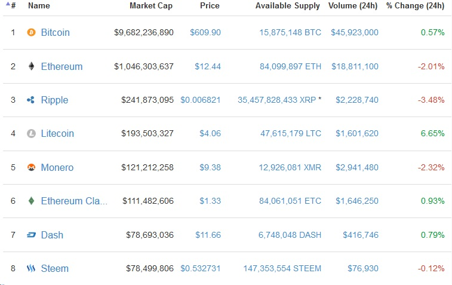

There were more than 710 cryptocurrencies available for trade in online markets as of 11
July 2016 and more than 740 in total but only 9 of them had market capitalizations over $10 million.

[ Market Capitalization of Cryptocurrencies ]
[ List of Cryptocurrencies ]